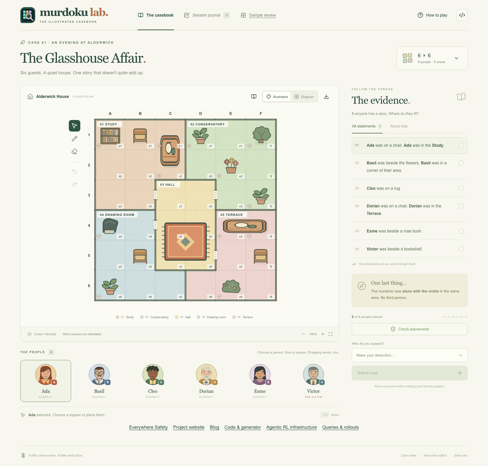
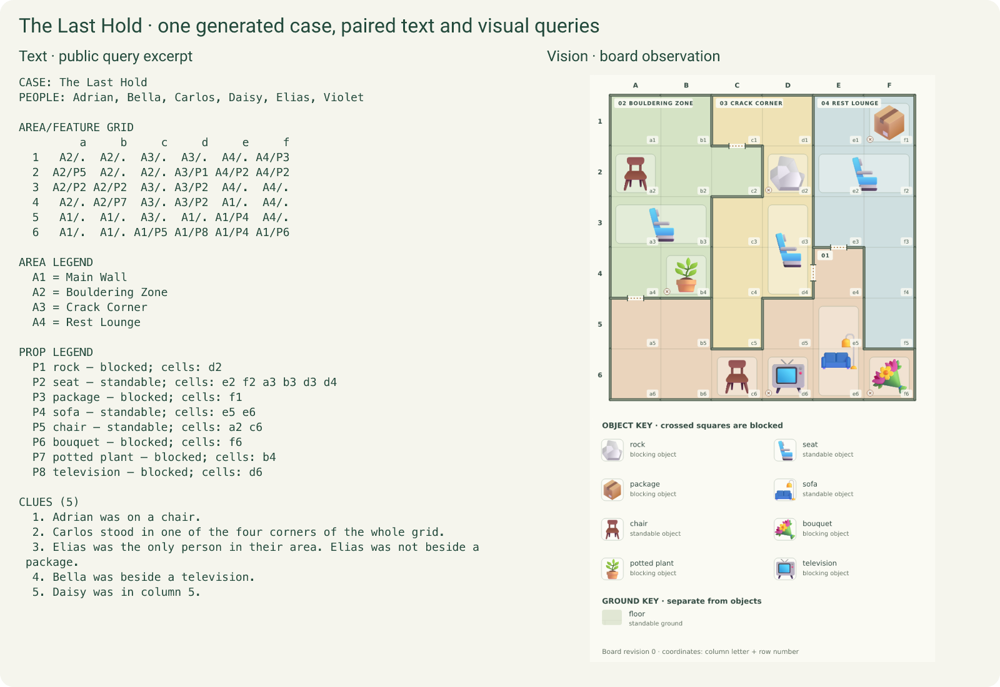
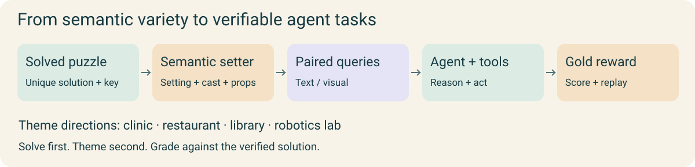

A puzzle workshop for humans and agents
Murdoku Lab.
More detective puzzles to play, create and analyze. Diverse agentic RL queries with rich semantics and gold rewards.

For players
Explore illustrated cases. Create new boards and clues, then inspect the deductions and difficulty behind each solution.
Open the casebook → · Create your own → · What makes a puzzle satisfying?For agent builders
Export text and visual tasks with stateful tools and executable gold rewards. Use queries for RL, or query + model rollouts for SFT.
Connect an RL trainer →Different worlds to reason about.
Vary settings, characters, rooms and objects over verified puzzle structures. Colorful visual assets make those settings visible.

One puzzle. Two ways to observe it.
A text board or an illustrated screenshot, paired with clues and the same interactive tool interface.

Solve first. Add the world.
Following VHD-Play, the formal solver establishes the solution before the LLM setter adds the setting and story. The environment uses that solution to provide gold rewards.

A good puzzle has a rhythm.
A way in, discoveries that unlock the next step, and a satisfying reveal. We profile first discoveries, gaps and placement chains to compare how generated puzzles unfold.

The 9×9 sample starts quickly but has longer interruptions later. Opening ease and sustained progress describe different parts of the challenge. Explore the measurements in the blog →
Build an agent that plays.
Agent Horizon supplies long-horizon agentic RL infrastructure on veRL: persistent state, context clearing, asynchronous rollout and training integration.
Queries, rollouts and a solver.
One JSONL with 698 text and 500 visual training queries and successful interactions, plus 106 validation cases in both views. Image assets are included alongside the file.
Murdoku Detective 4B is a trained solver example.
Inspired by Murdoku, by Manuel Garand.